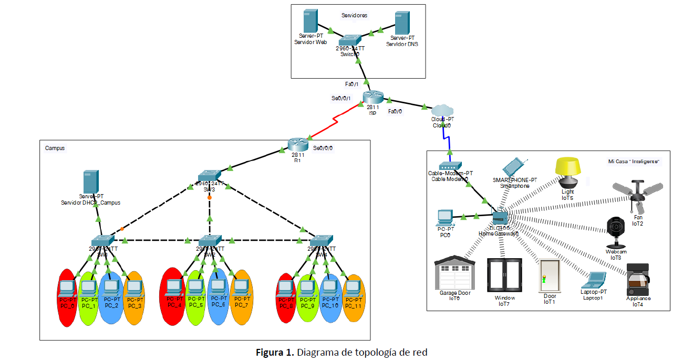

Proyecto Final: Red Campus
Este proyecto final busca que el estudiante ponga en práctica todos los conceptos adquiridos durante la asignatura y fortalezca sus habilidades de resolución de problemas e investigación, configuración e implementación de redes y tecnologías LAN e interconexión utilizando Packet Tracer.

Imágen tomada de Pixabay.com, licencia CC:BY
Procedimiento
"Divide y vencerás" esto es lo que represeta el subneteo de redes, no solamente por "estética u orden", sino por rendimiento y seguridad, el subneteo de redes es un proceso común muy importante en cualquier topología, puesto que divide no solamente las ip de los diferentes hosts, sino que también divide el ancho de banda designado para cada subred, todo esto para darle paso a las Vlan, redes internas que manejan su proprio Dominio Broadcast donde aumentan aún más la seguridad de la topología y mejora la transferencia de datos entre los diferentes órgados de las empresas o partículares con necesidad de almacenar, envíar o recibir paquetes a alta velocidad sin necesidad de tener un pen drive, entre otros.
Ahora debemos conocer el paso a paso para la solución de nuestro proyecto final:
1. Construcción de la topología
Antes de comenzar con todo el proceso de configuración, debemos de saber qué es lo que vamos a trabajar, qué equipos vamos a configurar y qué objetivo deberá cumplir nuestra red, para eso nuestro documento guía nos facilita la vida dandonos la topología a recrear en el software de Cisco Packet Tracer, la cual queda de la siguiente manera:
 Según PDF
Recreado en PT
2. Subneteo de redes para Campus, LAN de Servidores y WAN
Para empezar con el subneteo de redes para el Campus, debemos de tener en cuenta la dirección que nos da la guía, la cual es: 190.30+X.0.0/16 donde X es igual al número del grupo el cual es "1" para nuestro caso, con esto la ip resultante quedaría: 190.31.0.0/16, además de esto, uno de los requerimientos más importantes es que cada Vlan requiere 254 Host para su operación, pero ahora, ¿cuáles son las VLAN que necesitamos?, tranquilo, el documento Guía nos da una tabla de Vlans, esta es:
La VLAN de Docentes es de color VERDE; la VLAN de Alumnos es de color AZUL, la VLAN del personal técnico & DHCP es de color ROJO y la VLAN de la Biblioteca es de color NARANJA.
Con esta información podemos empezar a hacer el proceso de subneteo, para este paso, optaremos por hacer subneteo VSLM (Máscara de Red Variable), empezaremos con los pasos aprendidos en clase:
A. Ordenamiento de mayor a menor de los host solicitados:
Para este punto, debemos de tener presente que para las 4 VLANS que se nos piden tenemos la misma cantidad de Host, la cual es 254 por cada una, por este motivo el orden de mayor a menor no importaría mucho. Teniendo en cuenta lo anterior, el orden arbitrario que tomaremos para el subneteo será; 1. VLAN 35: Biblioteca: 254 Host; 2. VLAN 20: Estudiantes: 254 Host; 3. VLAN 40: Cuerpo Docente: 254 Host; 4. VLAN 55: Servicio Técnico y DHCP: 254 Host, ahora cabe destacar que necesitamos 2 host adicionales para el enlace de los routers que requieren 2 Host.
B. Identificar los bits necesarios por cada subred (2^n)
En este caso como todas las VLANs necesitan 254 Host, se requieren 2^8 bits para cada una de las Vlans presentes en nuestra red de Campus, y para nuestro enlace de routers necesitamos 2^2 bits, tal cual como indica la siguiente tabla:
C. Identificar la nueva máscara para cada subred
La máscara de subred es muy importante para definir la red a la cuál pertenece un equipo, por este motivo, nuestras máscaras de red para cada una de nuestras subredes queda de la siguiente manera:
D. Calcular las subredes
Para este paso, deberemos calcular las subredes de cada VLAN, estas son muy importantes para nuestro direccionamiento y división de cada una de las VLANs solicitadas, estas son las subredes:
E. Calcular el broadcast
Calculando el Broadcast de nuestra red quedaría de la siguiente manera:
F. Calcular la primera dirección del host
Para calcular la primera dirección del host, debemos sumar un 1 a la porción de red de las subred calculadas anteriormente para nuestras subredes, tal como se muestra a continuación:
G. Calcular la última dirección del host
Para calcular la última dirección de nuestro Host debemos restar un 1 a la porción de red de nuestras direcciones broadcast calculadas anteriormente para cada una de nuestras subredes, tal como se muestra a continuación:
2.1 Subneteo Red WAN (Enlace seriales y Cloud)
Para la realización de este apartado, debemos de tener presente la dirección IP que nos da la Guía, la cual es: 11.10.2+X.0/24 donde X es el número de grupo el cual es en este caso "1", quedando de la siguiente manera: 11.10.3.0/24, así que ya sabiendo los pasos del subneteo VSLM, procederemos a calcular de manera rápida estas nuevas subredes teniendo presente que se necesitan solo 2^2 bits para los enlaces de routers y 2^2 bits para el enlace del cloud y del router.
La nueva máscara de subred es: 11.10.3.0 y 11.10.3.32 respectivamente, la nueva máscara es /30 para ambos casos, las direcciones broadcast son: 11.10.3.31 y 11.10.3.34 respectivamente, las primeras direcciones del host son: 11.10.3.1 y 11.10.3.33 respectivamente, la última dirección de host es 11.10.3.30 y 11.10.3.33 respectivamente.
2.2 Subneteo Red Servidores
Para este subneteo debemos tener presente que; la ip dada es 209.175.100+X.0/24 quedando igual a 209.175.101.0/24, donde para los servidores se requieren que cada 1 tenga 30 host para su funcionamiento, todo el proceso nos queda de la siguiente manera:
Una vez obtenida toda la información, pasaremos a realizar la configuración de cada uno de los equipos en Cisco Packet Tracer.
3. Aplicando la configuración a Packet Tracer
Para comenzar se crearon 4 diferentes pools de redes ip en el servidor DHCP, las cuales direccionarían automáticamente el default gateway, la dirección Ip, la dirección DNS, de todos los computadores que se conecten a dicha red, quedando tal como se aprecia a continaución:
Posteriormente se realizó la configuración de cada uno de los dispositivos con su cheklist básico de seguridad por medio de un portátil administrador conectado por consola a cada equipo, logrando así una integración más amplia con el proyecto.
Además de esto, para mayor entendimiento del lector, se dejaron datos claves que son usados para la configuración de la topología, estos datos son:
4. Configurando las páginas WEB del server HTTP
La configuración de las páginas del servidor web fueron bastante sencillas, puesto que Packet Tracer ya nos da una plantilla si no queremos editar nada en el documento, en nuestro caso solo modificamos los integrantes y el título de dicha plantilla, quedando de la siguiente manera:
Por otro lado, el código de la página es básico, pero aún así se ve de la siguiente manera:
5. Aplicando la programación con Sockets en los PCs
La programación por sockets es importante para aprende a analizar qué es lo que hace una aplicación en segundo plano y como está opera por medio de todas las capas del modelo TCP/IP, por esto, este código de python simula a la perfección el paso de paquetes de datos entre redes, haciendo que su ejecución se divida en cliente y servidor, quedando de la siguiente manera:
Servidor
Cliente
6. Comprobando conexión
Conclusión
El conocimiento en redes, hace que las personas vean más allá de un computador accediendo a la internet, además de que abre un montón de posibilidades al uso de las mismas, por eso es importante conocer los conceptos básicos, para así estár blindados a un ataque de redes, puesto que este conocimiento genera la posibilidad de hacer un bien o un mal a una persona o compañía, por eso, empezar con los comandos básicos para Windows como para Linux es de vital importancia para empezar con el aseguramiento de nuestras redes, y así poder evaluar su rendimiento, calidad y seguridad, seguiremos trabajando con el constante aprendizaje en el campo, previendo un gran impacto a la sociedad para el futuro con los nuevos protocolos de transmisión de datos que se avecinan, esperamos que los comandos de red nos sirvan para comprender un poco más conceptualmente lo que nos rodea día a día, que todo tiene un punto A y un punto B, que debe ser respetado, porque aunque no lo veamos, las redes están presentes todos los días de nuestras vidas, apoyando a nuestro desarrollo como humanidad.